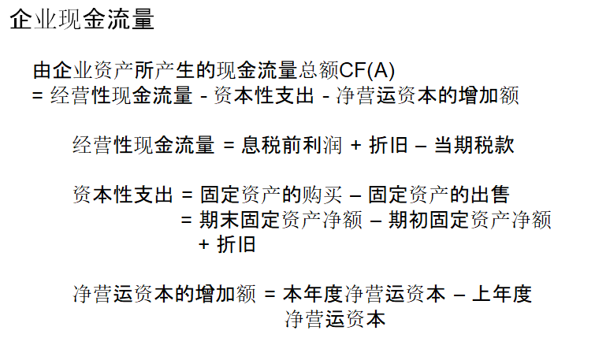
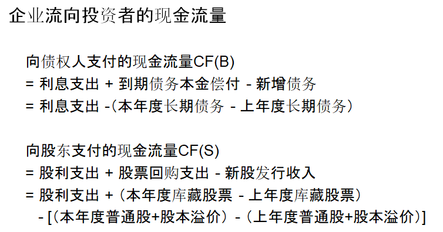

- 知识点整理：
- 财务报表是公司定期发布的描述其过往业绩和表现的会计报告
- 要求编制的四种财务报表：资产负债，利润，现金流量，股东权益变动
- 净营运资本：公司在短期内为维持运营的可用资本，等于公司流动资产与流动负债的差额。除了现金和债务，净营运资本也包括应收账款，存货和应付账款
- 很多资产是以历史成本而非公允价值列示于资产负债表中 的，并且另一些资产比如客户关系甚至不在资产负债表中
- 股东权益是公司股权的账面价值，成功公司的市场价值与股东权益的比率一般会超过
- 企业价值等于 市场价值+债务-现金
财务报表
- 上市公司定期发布的关于公司过去绩效信息的会计报告
- 向美国证券交易委员会（SEC）报送
- 10Q：季度报表
- 10K：年度报表
资产负债表
- 恒等式：资产 = 负债 + 股东权益
资产
- 流动资产：现金或者能在1年内转换成现金的资产
- 现金，高流动性、低风险证券
- 高流动性、低风险证券（Marketable Securities）
- 应收账款
- 存货
- 其他流动资产
- 预付费用
- 长期资产
- 财产，厂房和设备的净值，包括账面价值和折旧
- 商誉
- 其他长期资产
资产的会计价值通常是指账面价值，账面价值实际上是成本，但通常不同于市场价值，而管理者的任务就在于为企业创造高于其成本的价值
负债
- 流动负债：要在一年内清偿的负债
- 应付账款
- 应付票据、短期债务
- 于本期到期的长期债务
- 其他流动负债
- 应付工资
- 应付税款
- 长期负债：
- 长期债务
- 融资租赁
- 递延税款
负债和权益：
负债是企业所承担的在规定的期限内固定的现金支付（本金和利息）的责任。如果企业不能偿付将会构成违约。
债权人享有对企业现金流量的第一索取权。
股东权益则是对企业剩余资产的索取权，是不固定的。
股东权益等于资产与负债的差额，即：资产 - 负债 = 股东权益。
股东权益
- 股权账面价值：资产账面价值-负债账面价值，可能为负
- 股权总市值：每股市场价格*流通在外的股数，不能为负
- 企业价值：股权市值+债务-现金（超额现金）
净营运资本：operating capital
流动资产和流动负债的差额
成长性的企业净营运资本变动额（期末-起初）通常为正
利润表
会计的计量包括：确认会计期间的收入，将相应的成本和收入进行配比
权责发生制意味着确认收入是在销售时，而不是在客户实际付款时
收入不是等同于收到现金
利润表上与收入相配比的费用中有些属于非现金项目，并不影响现金流量
税率仅适用于对应区间内的收入，而非总收入
评价税率是收入中用于付税的金额所占的百分比
边际税率则是指多赚一元钱需要支付的税金
与财务决策有关的是边际税率
- 利润表科目：
- 销售收入
- 销售成本
- 毛利润
- 营业费用
- 销售，管理，研发费用，折旧摊销
- 营业利润
- 非主营业务收入/费用
- 息税前利润
- 利息收入，利息支付
- 税前利润
- 公司所得税
- 净利润
现金流量表
- 经营活动的现金流量
- 用与经营活动有关的所有非现金项目以及净营运资本的变动对净利润进行调整。
- 投资活动的现金流量
- 资本性支出，买卖有价证券
- 融资活动的现金流量
- 借款变化
- 股利支付
- 留存收益=净利润-股利
可以从从财务表表中获取的最重要的项目就是企业的现金流量
按照公司金融学的观点，企业价值在于其产生现金流量的能力
CF(A) = CF(B) + CF(S)
- 现金流量等式
- 
- 
经营性现金流量长期为负=》企业已经陷入困境
现金流量总额有时为负，较高增长率增长可能导致固定资产的支出大于经营性现金流量
总额现金流量有时也叫自由现金流量